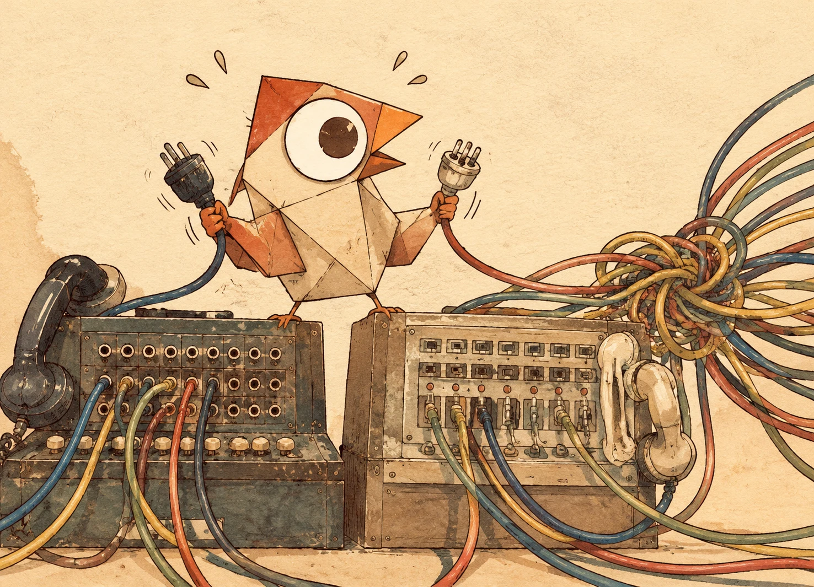
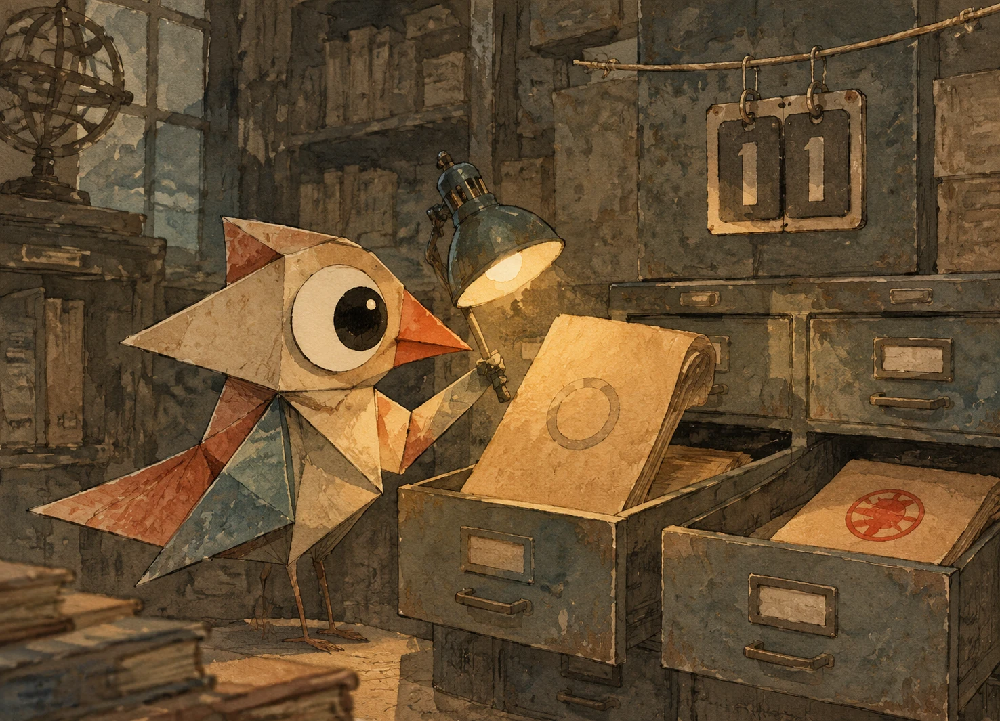
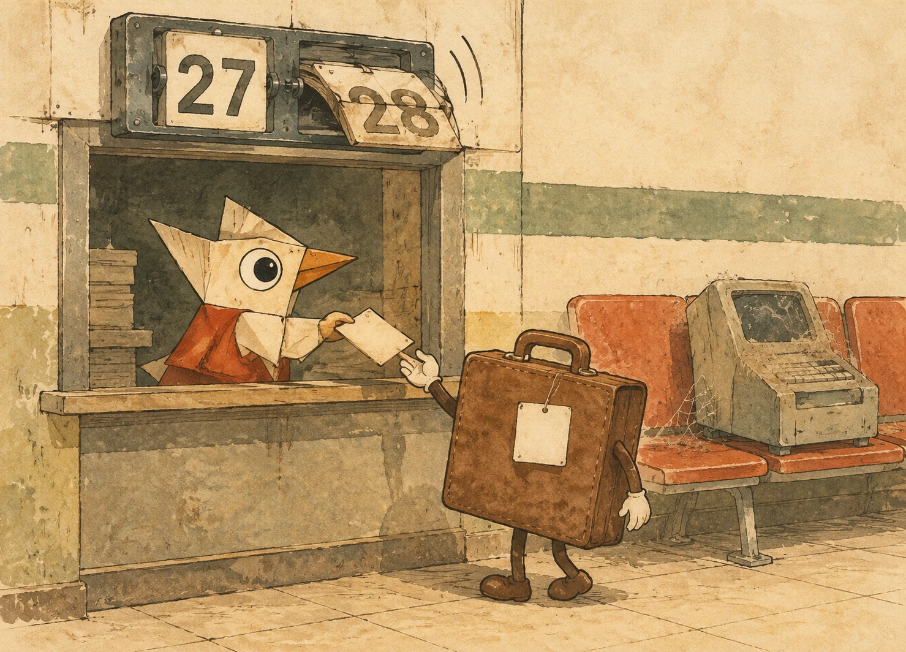
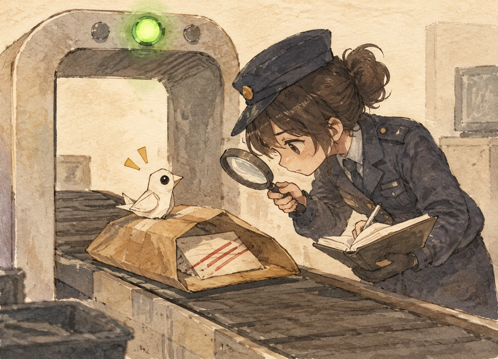
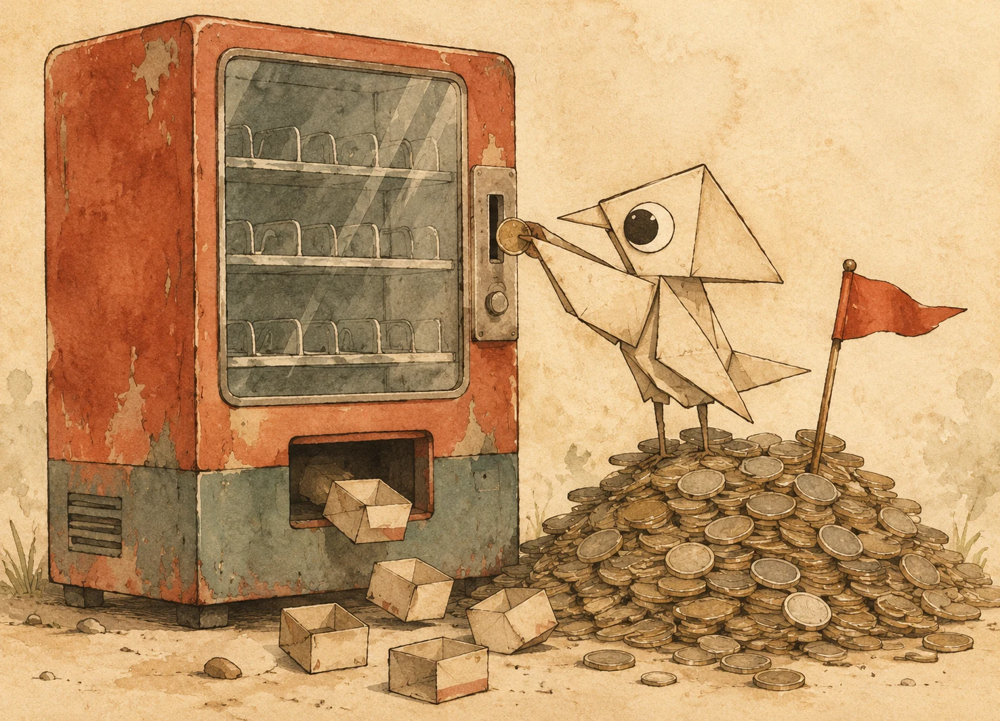

00:00
双网关分裂：三个配置源，三种说法
.env 说 18789，openclaw.json 说 37289，runtime-launch.json 也说 37289——三个说法都能自圆其说，唯一不一致的是事实
2026 年 11 月 12 日 23:16:55，我第一次手动拉起 OpenClaw 网关。三个小时后，启动器按它自己的配置又拉起了第二台。谁也没出任何差错——两台网关各自忠实执行了自己读到的配置。
openclaw --profile easel gateway run --allow-unconfigured --bind loopback --port $Port$Port 从环境变量与配置里解析出来——问题恰恰藏在「从哪里解析」。
把三份配置摊在桌面上，各自的理由都成立：
| 配置源 | 键 | 值 | 谁读它 |
|---|---|---|---|
| .env（安装期写入） | OPENCLAW_PORT | 18789 | gateway.ps1 手动启动路径 |
| data/openclaw/openclaw.json | gateway.port | 37289 | OpenClaw 自己的持久配置、CLI 传输探活 |
| data/runtime-launch.json | gatewayPort | 37289 | 启动器 start_workspace.py 导出为环境变量 |
结果就是 netstat 里的两行：
TCP 127.0.0.1:18789 0.0.0.0:0 LISTENING 6240 ← 全局 openclaw，手动启动 TCP 127.0.0.1:37289 0.0.0.0:0 LISTENING 1112 ← .tools 本地 openclaw，启动器拉起

两台网关共用同一个 profile、同一份会话库，却监听两个端口、写两套状态。执行器（runtime）按环境变量探 37289，探到的另一台按 18789 健在——于是日志里出现了这条在盘上至今可查的警告（data/.execution-service/service.log）：
[chat-transport] HTTP 直连探不通 http://127.0.0.1:37289/v1/chat/completions （端口来自 $OPENCLAW_GATEWAY_PORT），已退回 CLI 传输（每轮多付一次客户端冷启动）。 查：D:\project\Easel/scripts/gateway.sh status
「每轮多付一次客户端冷启动」——这不是崩溃，是降级：聊天还能通，只是每条消息都多背一次冷启动的税。而配置继续分裂下去，降级迟早变成失联。
等待重放……
为什么三个地方都要有端口？逐层看，每一份都清白：.env 是安装脚本 setup.ps1 写下的期初契约；openclaw.json 是网关进程自己的持久配置；runtime-launch.json 是工作台「保存的启动设置」。单独看，各自都是单一来源的合格公民。问题在于端口是一条跨层契约——三个层各自持有一份副本，却没有一个唯一的权威。三个说法中两个一致、一个少数派时，错误还能被「多数」压住；当少数派恰好是启动顺序在前的那个，赢的是启动顺序，不是事实。修复只做了两件事：把 openclaw.json 与 runtime-launch.json 统一到 18789，然后立一条规矩——端口和版本号一样，必须有单一来源。这不是新发明，是把项目里「pyproject.toml 是唯一版本来源」的既有纪律，补到了端口头上。
00:01
僵尸启动记录：一行 NULL，锁死一台网关
healthz 绿着、聊天 0.2 秒秒败——半死状态藏在一行没人收尾的台账里
11 月 14 日 09:26，网关第三次重启。启动日志停在 starting...，此后十八分钟再无一行输出。而 healthz 依旧回答 {"ok":true,"status":"live"}——仪表全绿，聊天 0.2 秒内失败。
那天上午用户连发三条消息，三条都在一两百毫秒内被拒绝。失败台账（data/logs/failure-events.jsonl）里三笔并排躺着：
| 事件 ID | 本地时间 | 耗时 | 指定的模型 |
|---|---|---|---|
| 3ff3a413… | 11-12 23:54:51 | 194 ms | （未指定） |
| 091d3c23… | 11-14 09:23:21 | 123 ms | anthropic/deepseek-v4.1-flash-1017 |
| 94bde120… | 11-14 09:43:58 | 272 ms | relay/deepseek-v4-pro-0813 |
时间线一律是「请求已收到，等待运行器确认」，然后执行失败。运行器根本没醒。翻开 gateway.error.log（以下为现场转录，该文件后被重启覆盖），答案躺在里面：
09:26:12 Gateway failed to start: gateway already running (pid 6240); lock timeout after 5000ms
If the gateway is supervised, stop it with: openclaw --profile easel gateway stop
09:26:14 Port 18789 is already in use.
09:26:14 - pid 32568: D:\node\node.EXE ...\.tools\npm\node_modules\openclaw\openclaw.mjs
--profile easel gateway run --allow-unconfigured --bind loopback --port 18789「pid 6240 已经在跑」——可是 18789 上此刻listening的是 32568 自己。翻数据库，锁的来路找到了。OpenClaw 在状态库里有一张启动台账表 gateway_boot_lifecycle，里面一行原样记录：
boot_id: 1e7403f9-6af5-4b28-a24c-1e40dfaa377f pid: 6240 started_at_ms: 1794496615287 ← 2026-11-12 23:16:55（第一次手动启动那一刻） completed_at_ms: NULL ← 永远等不到收尾的一行

台账的设计本身是干净的：启动时先记一笔，正常退出时在 finally 里把账做平（easel 同类机制见 runtime_worker.py 末尾——干净退出连状态文件都会顺手清掉）。脏的不是设计，是死法：昨晚那台网关是被强杀的，finally 没来得及跑，这行 NULL 就永远留在了表里。
一行台账，凭什么锁死整台网关？把启动例程的检查顺序展开就明白了：新实例启动 → 查台账有没有未完成的 boot 记录 → 有 → 台账里记着 pid 6240 → 问操作系统「6240 还活着吗」→ 答「活着」→ 结论「已有网关在运行」→ 等锁 5 秒 → 放弃启动。每一环单独看都严谨，连起来就是一座精确通向故障的桥。而 agent 数据库的陈旧租约（agent_database_leases 里同样挂着一条 owner_pid=6240）还在旁边帮腔。
手术记录很短：两个状态库里 completed_at IS NULL 的 boot 行共三条（6240 / 37116 / 32568，每条都是一次硬杀的遗产），连同一条陈旧租约一并摘除；下一台网关 09:54 启动，日志一路走到 ready，117 个技能回到工作台。但台账这课还没完——「pid 6240 活着」这个判据本身，才是第三起事故的伏笔。
00:02
PID 复用：操作系统把 6240 发给了别人
「pid 还活着」只证明有个进程活着，不证明还是那个进程
锁没有错，台账没有错，错的是那个最顺手的判活办法：问操作系统「pid 6240 还在吗」。
第二天早上问了一次，答「在」：
ProcessId : 6240 Name : WMIRegistrationService.exe CreationDate : 2026-11-14 8:15:43

昨晚的网关进程早死了，但 pid 6240 这个整数没有被注销——操作系统的 pid 是个小整数池，用完回收、再发新人。今晨 8:15，同一个 6240 发给了一个完全无关的 Windows 服务。于是昨夜的僵尸台账醒来一查：「6240？活着。」——它没有说谎，它只是不知道自己问错了人。还有一层讽刺：前一天晚上 taskkill 它时返回「拒绝访问」，那其实是一个正在死亡的进程的竞态回声，被当成了顽抗。
pid 判活错在哪？错在把「存在」当成了「同一」。存在性证明只需要一个整数；同一性证明需要两个——pid 之外还要配一个进程启动时间，两者成对相等才算数。有意思的是，同一份代码库里正确的示范就躺在旁边：agent_database_leases 的列定义是 lease_id, agent_id, path, owner_pid, owner_start_time, opened_at——租约判活用的是 pid 与启动时间成对比较。同一个仓库，两种传统并存：一种被写进了文档，另一种只在事故里露面。
| boot_id | pid | completed_at |
|---|---|---|
| 1e7403f9… | 6240 | NULL |
等待重放……点「重放四幕」开始。
这一课的修复分两层：当下，摘除僵尸行与租约（外科手术，幂等、可重放）；长期，给这类台账判活补上成对校验——pid 与启动时间必须同时相等，才算同一进程。这条建议同样适用于任何用「号牌」判活的地方：号牌会易主，启动时间才是那个人统一的指纹。
00:03
200 谎报：拒绝文案穿着 200 的外衣
传输层说「送达」，业务层说「不办」——你测的是哪一层？
平台修稳之后，最后剩下的心病是渠道。11 月 14 日上午，隔着网关发了一发真实请求——HTTP 200，六秒流式返回，一切指标健康。内容是这一行：
—— api.kunyou.asia 经网关返回的 assistant 正文，HTTP 200 · elapsedMs≈6271 · text/event-stream

这不是故障，是对方的准入策略：Coding 套餐镜像站按客户端身份放行，名单上的每一个都是 CLI 形态的代理——Easel 网关这种普通 API 调用方天然不在册。麻烦在于它选的表达方式：拒绝信息作为正常对话内容、穿着 HTTP 200 的外衣送达。同一组渠道里的另一位（qui.cc.cd）倒是直接给了 403：This group does not allow /v1/messages dispatch，换 OpenAI 格式再试，是 internal error——两种风格，前者体面地撒谎，后者诚实地报错。
而设置页上渠道显示「已连通 · 通过」。测活逻辑只核对了状态码。
测活只看状态码为什么不够？因为状态码是传输层的事实，不是业务层的事实。200 只承诺「包裹送达」，不承诺「包裹里是什么」。对一个聊天渠道，业务层的成功定义应当是「返回了有效的 assistant 内容」——拿到一段「我不服务你」的散文，等价于失败。测活闸少装一道滤网，假信号就会一路绿灯地流向用户：界面上永远「已连通」，聊天里永远答非所问。
本站仅限主流 Coding 客户端/CLI 使用，支持：Codex、Claude Code、OpenCode、Magpie、DeepSeek Harness、ZCode、Pi、Oh My Pi。当前客户端不支持。
修复的方向因此非常便宜：测活读一次正文。不需要理解语义，只需要拒绝「明确说明自己不服务的回复」。真正贵的是那之前的三天——绿灯放行了多少次「已连通」，聊天里就沉默了多少次。
00:04
无限重试烧额度：31 发空回复，206 秒
一把重试钥匙，开了三种不同的锁，其中一把是你的钱包
200 谎报自己不会烧钱，它只是把柴火码好；点火的是执行器的重试策略。11 月 14 日 09:21:41，一次用户消息触发的运行，在 206 秒里对渠道发起了 31 次完整请求。
证据整整齐齐躺在 data/logs/raw-stream.jsonl 里——每一次模型回复结束都会落一行事件，而那 31 行的正文字段全是空的：
{"ts":…, "event":"assistant_message_end", "runId":"chatcmpl_64362a35…", "rawText":"", "rawThinking":""}
{"ts":…, "event":"assistant_message_end", "runId":"chatcmpl_64362a35…", "rawText":"", "rawThinking":""}
……共 31 行，rawText 全为空串| 日期 | 发数 | 时长 | 间隔范围 |
|---|---|---|---|
| 2026-10-20 20:22 | 5 发 | 102 秒 | 22–31 秒 |
| 2026-11-12 23:27 | 5 发 | 108 秒 | 7–34 秒 |
| 2026-11-12 23:34 | 6 发 | 106 秒 | 9–39 秒 |
| 2026-11-14 09:21 | 31 发 | 206 秒 | 2.8–21.3 秒 |

机制链一节一节捋直：渠道把拒绝文案塞进 200 流 → 流解析正常结束、assistant 正文为空 → 执行器把「空回复」归入「本轮未完成」→ 重试 → 渠道再次 200+拒绝 → ……每一环都各司其职，合起来是一台准确的烧钱机器。当时的止损手段只有一个——重启网关，杀掉那个运行。事后对账，官方 2026.11.3 的更新日志里恰好躺着一行对症的修复：「Recognize exhausted usage-limit errors without spending the transient rate-limit retry budget」——识别限额类错误，不消耗重试预算。方向给得很直白：重试不该是不看内容的自动贩卖机。
重试空回复为什么是错的？因为「空回复」是三个不同疾病的同一个症状：网络抖动（重试有效）、上游限流（重试必须按对方的节奏）、业务拒绝（重试只会重复烧钱）。一把钥匙开三把锁的代价，是其中一把锁后面站着你的钱包。正确的重试必须先做分诊——哪怕只分「有内容/无内容」这一刀，31 发也能变成 1 发。
00:05
状态机清算：接一层，背一层
五起事故不是五个独立倒霉，是同一句话的五次显影
把五起事故摆上同一张桌子，会发现它们共享同一个结构：每接一层别人的能力，就同时接回来一台藏在暗处的状态机；文档介绍的是按钮，事故介绍的是按钮背后的表。
| 借来的能力层 | 它藏的状态 | 漏出的样子 | 我们的止损 |
|---|---|---|---|
| OpenClaw 网关（×2 台） | boot 台账、profile 锁、端口配置、双状态目录 | 双 LISTENING、半死假活 | 统一端口 + 摘除僵尸行 |
| OS 的 pid 表 | 整数池回收复用 | 6240 易主 WMI 服务 | 成对校验（pid+启动时间） |
| Coding 套餐渠道 | 客户端白名单、准入策略 | 200 谎报 / 403 组禁 | 测活读内容 |
| 执行器重试 | 退避预算（对空回复不设限） | 31 发 / 206 秒 | 重启止损 + 预算上限 |
| Easel 自己的 runtime | code_digest 指纹守护 | 改代码即自爆，旧代理残留占端口 | 已成文档的重启纪律 |
最后一行是故意放进去的：Easel 自己那台「改代码即自杀」的 runtime，同样是「接一层背一层」——只不过这层是自己写的，状态机自己认得，文档自己补了。这恰好说明问题不在「别人家的」，而在有没有把状态机当一等公民写进文档。同一个人写的产品，认真对待状态的那层，事故后只需要重启；不认真对待的那层，事故后需要一本台账来查。
为什么「接能力」总是顺手的，「接状态」总是漏掉的？因为能力写在文档第一页，状态藏在 schema 第十张表。集成者按文档点按钮，一切工作；状态机在你不知道的目录里安静生长，直到某天它决定你的网关「已经在运行」。所以接入之前值得问三个问题，这三个问题不是从哪本书抄的，是从这三天里抄的：
② 它用什么判活？如果答案是裸 pid，请对照第三章：号牌会易主，启动时间才是指纹。
③ 它失败时会重试吗、上限在哪？找不到上限，就假设上限是「你的额度」。
这本台账的性格清单
把六章合上，这本事故台账的教训可以列成一张单子——每一条都能在日志里找到自己的时间戳：
.env、openclaw.json、runtime-launch.json 三个说法都能自圆其说，赢的却是启动顺序。跨层契约必须在某一层里指认唯一权威——其余层只许引用，不许另存副本。
healthz 绿 ≠ ready。半死状态探活全绿、能力全无，是最费人时的故障形态。凡是自己产品里有「两段式启动」的地方，第二段的完成必须成为一等公民的指标。
pid 判活只证明「有个进程」，不证明「还是那个进程」。台账类记录一律配 started_at 成对校验——同一份代码库里正确的示范早就存在（agent_database_leases 的 owner_start_time），别让两种传统并存。
空回复是三种病的同一个症状：网络抖动、上游限流、业务拒绝。哪怕只分「有内容/无内容」一刀，31 发也能变 1 发。识别限额类错误不消耗重试预算——官方 2026.11.3 的这条日志值得贴在执行器门上。
状态码是传输层的事实，不是业务层的事实。「已连通 · 通过」四个字值不值信任，取决于测活闸读没读包裹里的东西。
至此，造物手记的集成篇补上一块：VOL.10 让 Agent 学会挑模型，VOL.11 让 Agent 学会指挥 Agent，VOL.12 让 Agent 独自值守，VOL.13 离开 Agent 修了张照片——这一篇回到工地，把「接别人的能力」背回来的五台状态机逐台清算。
结语
五起事故没有一起需要天才去犯，也没有一起需要天才去修——它们需要的只是把状态机当回事：写文档的时候多写一句「状态存在哪」，接能力的时候多问一句「你把什么留在我家了」。借来的机器终归要还，还不掉的，就写进台账。
这篇没解决的：渠道白名单本身（准入策略不可谈判，Easel 侧只能换标准 API 渠道或换 Codex 底座）；OpenClaw 2026.11.3 升级评估（官方已给出对症的重试预算修复，升级是独立任务）；boot 台账成对校验（已向上游复述，待验证）。